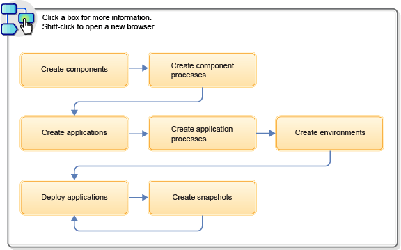

Modeling software deployment
Modeling software deployment in HCL® UrbanCode™ Deploy includes configuring components and component processes and adding those components to applications. Then, you use processes to deploy the components to environments.
The general steps in this typical workflow include:
- Import the parts of the application as components. See Creating components.
- Create processes that deploy components. See Component processes.
- Create an application to group the components together. See Applications.
- Create an application process that runs each component process. See Creating application processes.
- Create one or more environments on which to deploy the components. See Creating environments.
- Run the application process to deploy the components. See Deploying applications.
- Take snapshots of working deployments so you can save these arrangements and deploy them to other environments. See Creating snapshots.
The following diagram illustrates this workflow:

- Components
Components represent deployable items along with user-defined processes that operate on them, usually by deploying them. - Resources
A resource is a logical deployment target that typically resolves to an agent and a user-defined construct that is based on the architectural model of HCL UrbanCode Deploy. - Applications
Applications are responsible for bringing together all the components that must be deployed together. - Inventories
You use different inventories to track installed components and properties in HCL UrbanCode Deploy elements. - Processes
Processes are automated tasks that run on agents. - Statuses
Create and apply statuses to track component inventory states or to track component versions in environments and resources. - Properties
Properties are variables that store information about many different elements, including components, environments, processes, and applications. You can also set global properties for the system. - Tags
A tag is a user-defined, shared, short label that you use to classify, view, and conduct operations on objects such as applications, components, agents, and resources.